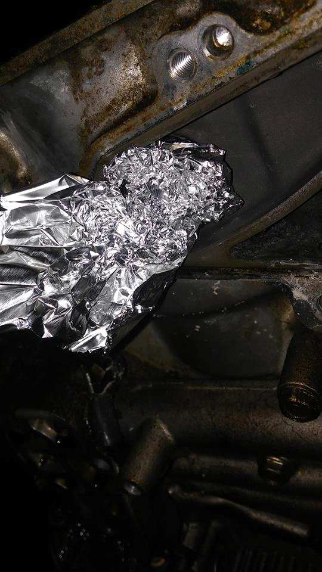
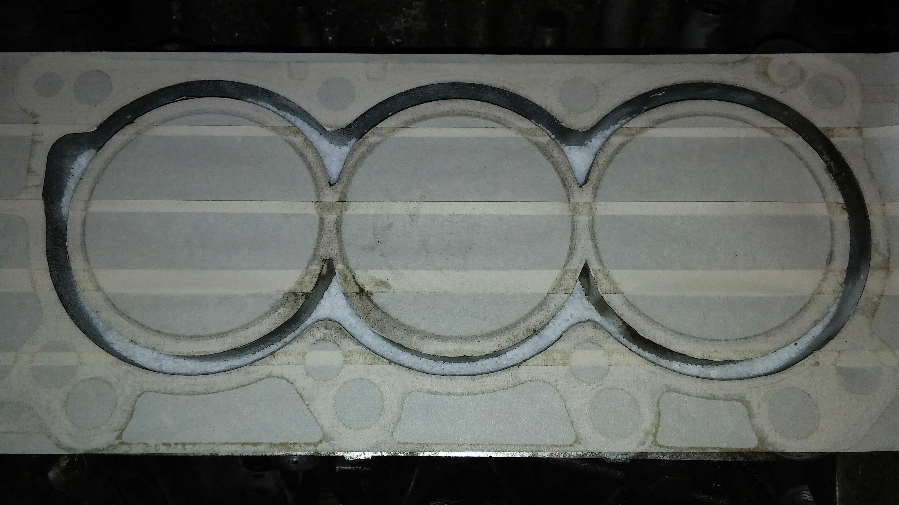
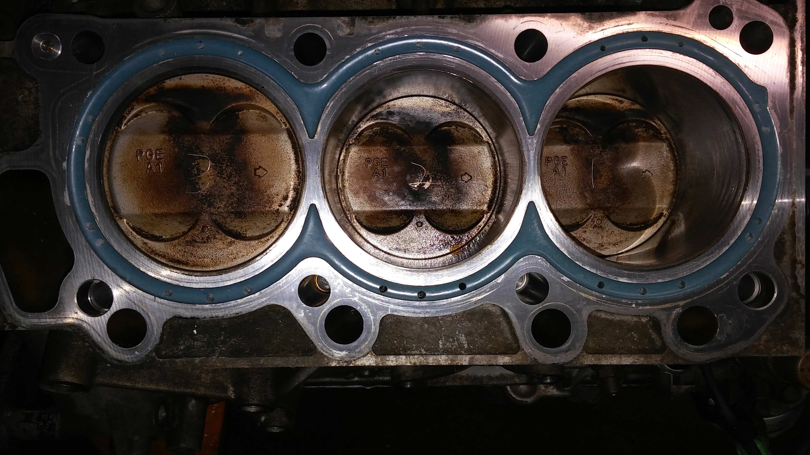
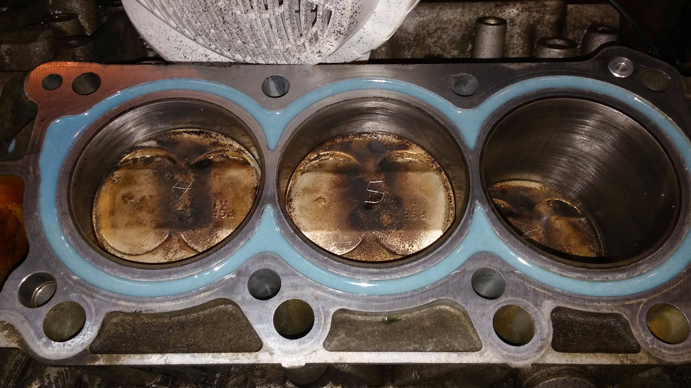
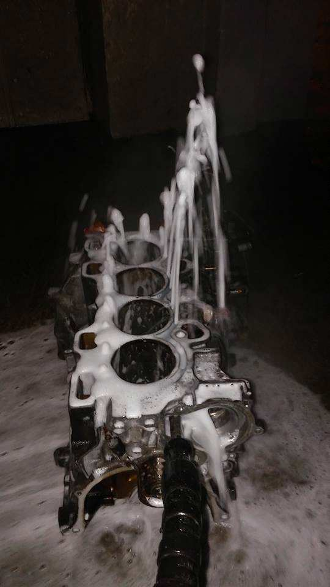

Clean the block surface and water jacket. Cover the block surface with masking tape, then use a razor blade to remove the tape covering the water jacket opening. Plug the water pump port with aluminum foil.
Fill the water jacket with salt until about 3/4" remains, ensuring the block is level. Use a screwdriver to level the salt.
Mix the epoxy in small batches at an 8:1 ratio until a light blue color is achieved. For carbon kits, mix the carbon flakes in after achieving the desired color. Pour the epoxy into the jacket using a small funnel, building it up in flat stages. Clean up any spills immediately.
After about 30 minutes, remove the tape and clean the block surface with a paper towel. Allow the epoxy to cure for at least 8 hours at a temperature no lower than 45 degrees Fahrenheit. Warmer temperatures will speed up the curing process.
Once the epoxy is fully cured, place the head gasket over the block surface and mark the water ports on the gasket and block with a marker. Use a small drill bit to drill through the marked areas until you reach the salt. Ensure the holes do not touch the sleeve and are centered. Wash the salt out of the block thoroughly.
